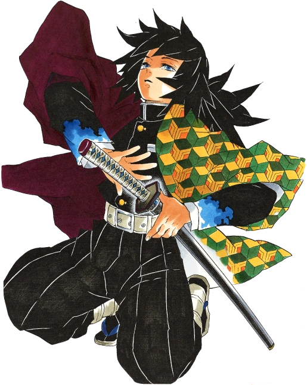

Giyu Tomioka
Age: 21
Breathing Style: Water Breathing
As the stoic Water Hashira of the Demon Slayer Corps, Giyu saved Nezuko and spared Tanjiro’s life during their first encounter. He continually pushes Tanjiro to refine his Water Breathing techniques.
Both are Water Breathing users—Giyu recognized Tanjiro’s potential and passed on this style to him.

Muichiro Tokito
Age: 14
Breathing Style: Mist Breathing
The young Mist Hashira who initially struggles with fragmented memories. His calm, otherworldly demeanour belies a fierce determination once roused.
Muichiro is Tanjiro’s close friend—Tanjiro helped him recover his lost memories and supported him through battle, so Muichiro treats him like his best friend.

Yoriichi Tsugikuni
Age: 84
Breathing Style: Sun Breathing
The legendary creator of Sun Breathing and the strongest Demon Slayer in history. His legacy lives on through his technique.
Tanjiro inherits and uses Sun Breathing, the very style Yoriichi developed centuries ago, making them linked by technique and bloodline.